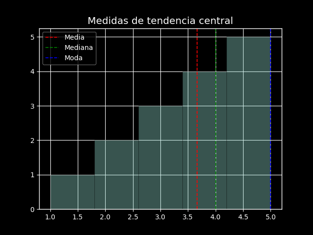

Introducción a la Ciencia de Datos| UJTL
Análisis exploratorio de datos
Análisis exploratorio de datos
OVA 1 Introducción al análisis exploratorio de datos
Objetivos
- Comprender conceptos básicos de EDA
- Aprender estadística descriptiva
- Visualizar y resumir datos
- Realizar EDA en Python
¿Qué es EDA?
Proceso para examinar, limpiar y analizar datos.
Permite encontrar patrones y entender los datos.
Etapas del EDA
Recolección
Limpieza
Análisis
Visualización
Derivación de insights
Estadística descriptiva
Resumen numérico de los datos:
Medidas de tendencia central
Media
Mediana
Moda
Medidas de dispersión
Rango
Desviación estándar
Varianza
Visualización de datos
Permite detectar tendencias y outliers.
Histogramas
Muestran la distribución de frecuencias.
Diagramas de dispersión
Muestran relación entre dos variables.
Python para EDA
Principales librerías:
Importar datos
import pandas as pd
datos = pd.read_csv("data.csv")
Limpieza de datos
import numpy as np
datos.dropna()
datos = datos[datos["x"] > 0]
datos["y"].replace(-999, np.nan)
Análisis y visualización
datos.describe()
import matplotlib.pyplot as plt
plt.hist(datos["x"])
plt.boxplot(datos)
Objetivos del análisis exploratorio de datos
El EDA es un componente crucial en la ciencia de datos porque permite a los analistas obtener insights iniciales y entender el patrón de los datos. El EDA es un componente crucial en cualquier proyecto de ciencia de datos por varias razones:
Comprensión del Problema: Ayuda a entender mejor el problema que se está tratando de resolver.
Calidad de Datos: Permite identificar la calidad de los datos y si es necesario realizar alguna limpieza o transformación.
Selección de Variables: Facilita la selección de las variables que serán útiles para el modelado.
Desarrollo de Hipótesis: Proporciona una base sólida para el desarrollo de hipótesis para pruebas estadísticas más avanzadas.
Mejor Comunicación: Los gráficos y tablas generados durante el EDA facilitan la comunicación de los hallazgos a las partes interesadas.
Un científico de datos debe ser capaz de:
ejecutar una regresión
ejecutar una regresión
escribir una consulta SQL
hacer scraping de un sitio web
diseñar un experimento
factorizar matrices
usar un marco de datos
pretender entender aprendizaje profundo
graficar problemas complejas
discutir R contra Python
construir un tablero
limpiar datos desordenados
probar una hipótesis
hablar con un empresario
escribir un script de shell
programar en una pizarra
hackear un p-valor
aplicar aprendizaje automático a un modelo